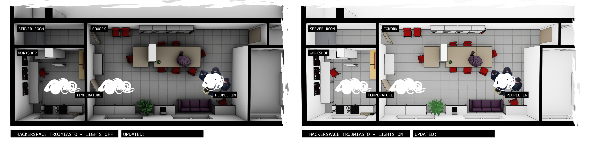

Home Assistant HS3 Plan
Introduction
Hackerspace Trójmiasto (abbrv. HS3) is a community focused on technology, as well as a physical space located in Gdańsk, Poland. It is open to anyone. The space has its Home Assistant solution, alongside many iot devices. This project aims to plot the current data from these devices and show them on the Hackerspace's plan.
You can see the live website here: martasien.github.io/home-assistant-hs3-plan
What does the website show?
-
Current temperature in HackerspaceData gathered from hackerspace's thermostats.
-
Number of people in HackerspaceData gathered from voncount people counter, another interesting project from HS3.
How does it work?
The website is generated using a script prepared in Python. It utilizes Home Assistant's RESTful API, as well as requests Python library, to send requests and receive the current state of chosen IoT devices.
Although the website is static, using mainly pure HTML & CSS, the choice of devices, as well as their placement on the plan can be easily customized using the Python based website generator.
All information generated in Python script is placed on the images by XY coordinates:
entities = [
["bottom:270px;left:330px", "sensor.termostat_warsztatowy_cnc_air_temperature_2"],
["bottom:270px;left:600px", "sensor.termostat_cowork_air_temperature"],
["bottom:290px;left:1110px", "sensor.people_in_hackerspace"],
]
The website is updated every 15 minutes using a custom GitHub Action, that sends the request and commits it to the separate branch. This way, the history of the main development branch remains intact.
I've rendered 2 images that represent HS3 with the lights off, when it's closed, and on, when it's open to visitors.

All images are based on my 3D model, which is embedded on the website as well.
If you'd like to see my solution in detail or make your own Home Assistant representation, you can check out my public repository: home-assistant-hs3-plan. I'm always happy to help with a project, so If you'd like to contact me about this solution, how I made the 3D model etc. feel free to drop me a line! 😊
Closing words
Ever since I saw the HS3's Home Assistant, I thought that making a plan with plotted IoT devices would be very useful for other members. The Home Assistant dashboard offers an option to create and customize a plan like this. However, I've wanted to prepare a read-only solution available to every hackerspace's member, not only to Home Assistant administrators.
That's how the idea of using a periodically updated static website came to life. In comparison to a dynamic website, I can easily host this solution on GitHub. It is also faster and requires less resources. A perfect solution for a non-profit, where every subscription fee can be a significant burden.
One of the biggest challenges when creating a website was to prepare the space's plan in a responsive way. The image is rasterized, it has a set resolution. However, some of the information is placed using XY coordinates in CSS & HTML. With such a wide variety of potential screen aspect rations, I've still to find an ideal solution to combine these website elements without differences in placement. If you have an idea for a better implementation I'd be very grateful for tips. 💡
Attributions and thank you 💚
I'm thankful to DoomHammer, the HS3's member who introduced me to Home Assistant and guided me on its usage.